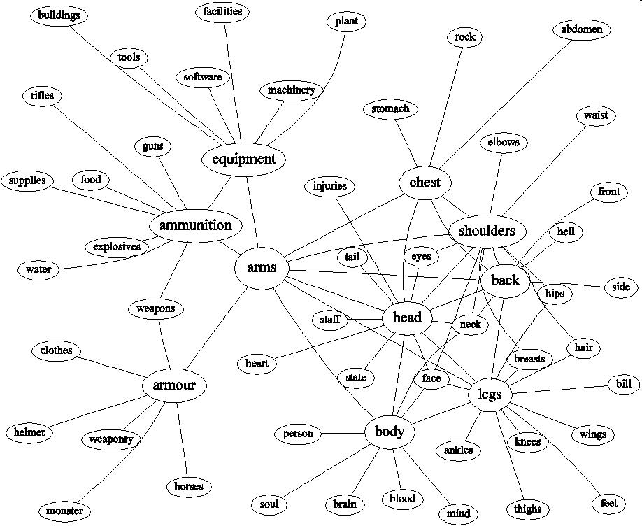

Graph showing an ambiguous word.
The neighbours of the node representing arms naturally fall
into different clusters representing the different meanings of
arms - "body parts" and "weapons."
You can build a similar graph using this Infomap
demo.
